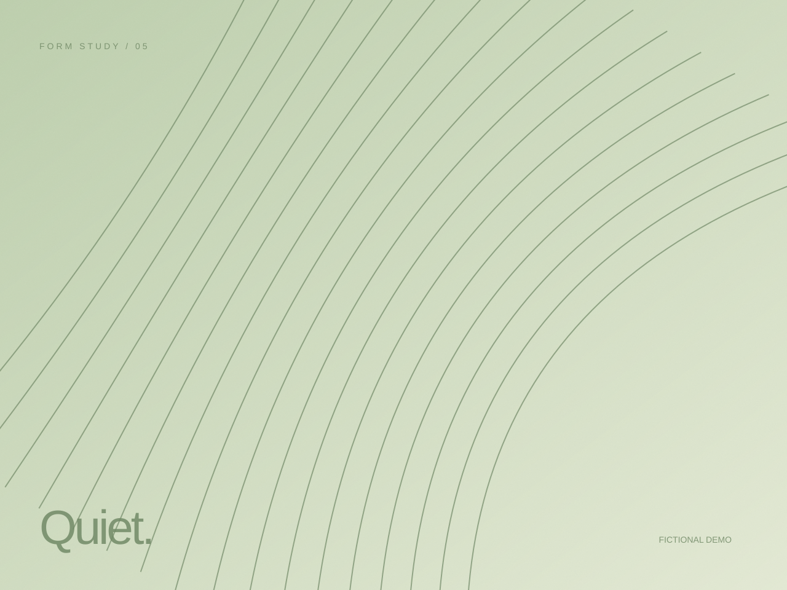

记录一个还没想完的念头
A Thought, Still in Progress

记录不一定要等到事情被想清楚。那些还没有名字的感觉、未完成的句子，可能会成为下一个项目的起点。这个页面只是一段可替换的示例文字。
A note does not have to wait until a thought is finished. An unnamed feeling or an unfinished sentence can be the beginning of the next project. This is replaceable demonstration text.
虚构示例文章，所有内容均可替换。Fictional demo article, ready for your own writing.